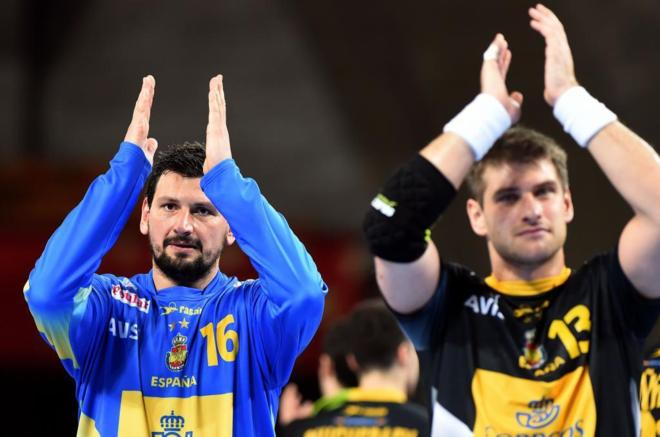

España está obligada a ganar a Rusia, este miércoles a partir de las 20.30 h, para estar en las semifinales del Europeo de Polonia de balonmano. El triunfo de Alemania sobre Dinamarca (25-23) fuerza a la victoria a la selección de Manolo Cadenas, que habría sellado su pase antes de su partido si la selección de Mikkel Hansen hubiese cumplido el pronóstico.
Alemania ha certificado la primera plaza de semifinalista del grupo 2 de Wroclaw. Si vence a los rusos, España será primera de grupo y Alemania será segunda. Si empata o pierde, Alemania pasará como líder seguida de Dinamarca, mientras que España quedaría fuera de la lucha por las medallas y jugaría por la 5ª plaza.
En el grupo 1 de Cracovia, la derrota de Francia ante Noruega (29-24) deja en el aire la clasificación de los ‘bleus’, a expensas de que el encuentro entre Polonia y Croacia deje en la clasificación un triple empate favorable al equipo liderado por Nikola Karabatic. Noruega se ha garantizado el primer puesto del grupo.